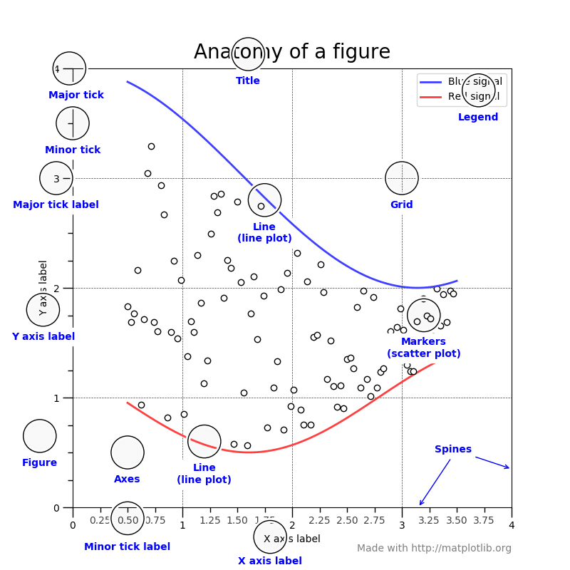

If you:
- Followed some tutorials called “how to plot in python in 5 mins” and learned matplotlib.
- Know to add ‘from matplotlib.pyplot import plt’.
- But always need to open the google page when doing any plot.
- Always struggling at adding labels/text/ticks/ to the plots.
- Know some tasks(like adding xlabels) can be done in several ways, but don’t know which is the best way.
- Open matplotlib official doc several times but have no idea what they are talking about.
- Confused by the terms: figure, axes, axis.
Then you’re not alone. I’m here with you. Always.
The purpose of this post, is to provide a clear guide of “how to use matplotlib without stackoverflow”, inspired from my struggling, based on my understanding.
plt.figure() V.S. fig, ax = plt.subplots()
I think all matplotlib tutorials should start with distinguishing between these two.
There are two methods of making plots in matplotlib
plt.figure(): Through a plot package, it’s like a short cut: quickly generate figures, but limited functions. You just need to use a bunch ofplt.***to generate the figure.1
2
3
4plt.figure(1)
plt.subplot(211)
plt.plot(A,B)
plt.show()fig, ax = plt.subplots(): On the other hand, through a real plot generator, mostly use axes. Generate fig and axes handler and plot based on them.1
2fig, ax = plt.subplots()
ax.plot(A,B)
Most beginner tutorials starts with the
plt.***, which I think is a bit misleading. It is a quick and easy way to plot, but without understanding what is going on under the hood, it’s hard to add on detailed features as you want better and better plots. Also, for detailed features, most often you need to switch to use axes, then this additional switch just create unnecessary confusions for beginner users.From my experience, I think it’s much better to avoid using any
plt.***in the beginning. Once you understand what is figure/axes/axis, and you know how to control them, then it’s ok to useplt.***if you just want a quick and dirty plot.
Terms in matplotlib
Before digging into the details, let’s first clarify the terms. I borrow this very good demonstration from official doc official doc (see? there are some parts of the official doc are readable).
- Figure
fig = plt.figure():- it’s like the canvas, everything you want to plot is on this canvas.
- The first thing when plotting , is to create a figure object, then you append/add differnt functions to this object.
- Axes
ax = fig.add_subplot(1,1,1):- IT’S NOT X/Y AXIS!! I really hope when they first create the library they can get a better name of it.
- You can think it as the object you want to put on the figure. For example, you draw a sun, a house and a bike on the figure, then the sun is axes 1, the house is axes 2, etc.
- For single plot figures, you only have one axes. For figures have subplots, each subplot is an Axes.
- This is the center of the matplotlib universe!
ax.***can solve most of your little edittings.
- Axis
ax.xaxis/ax.yaxis:- Here are the x/y axis for plotting your data.
- Axis is actually made of a bench of ticks and numbers, you can treat each of them as a small subplot of the axes. So you can call
ax.xaxis.axeswhich can modify the details of the xaxis. Here is the hierarchy between fig and axes.
Anatomy of a figure
The figure from User Guide is an excellent example of terms and names of a figure. 
Step by Step
Now you have an idea of the terms and structures of a matplotlin plot. Next let’s go through an example for demonstration.
Import library and data for ploting
1 | |
First, generate a figure
put an axes on it, and give the size of the figure.
1 | |
plot two data series on it
1 | |
set title, xlabel, ylabel
1 | |
Great, you finished an ugly plot with all necessary components in.